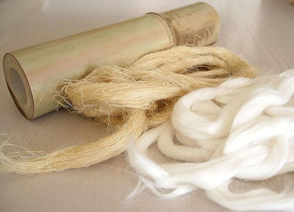

ROPA ORGÁNICA Y SOSTENIBLE PARA BEBÉ DE ALGODÓN ORGÁNICO O BAMBÚ
Descubre nuestra colección de ropa orgánica bebé. Ropa ecológica bebé que también es moda sostenible. ... Prendas y ropa bebé algodón orgánico, con certificado GOTS de que no contienen restos de pesticidas ni productos químicos nocivos que causan alergias o problemas en la piel de los más pequeños, o de suave bambú orgánico hipoalergénico y antibacteriano cultivado de manera sostenible sin pesticidas ni fertilizantes proporcionando una experiencia única a quienes lo llevan.